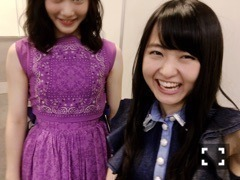
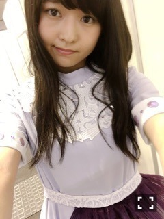

| 2016/06 20 Mon | ソファ届いた！721回目 |
京都で2ndアルバムスペシャル握手会
来てくださったみなさん
ありがとうございました。
1部 命は美しい
2部 君は僕と会わない方がよかったのかな
3部 太陽ノック(デニム)
4部 嫉妬の権利
5部 ハルジオンが咲く頃
アルバムに合わせて
11〜14th衣装を着用しますー

不意に撮れた純奈の涙袋
顔くちゃくちゃ＼(^o^)／

嫉妬の権利の衣装かわいい＼(^o^)／
衣装着て歩くみんなの後ろ姿見てると
やっぱり丈感がお上品でいいなあと
好きだなあと思いますね
残る2会場はまだ着てないものにします。
黒板アート展示してたんだね！
生で見られるのは良いですね〜

ぎくしゃくしてやろうか？おーん？
この二人を欲してます。
MdN発売中！
対談のお相手は画家 KYOTAROさん
KYOTAROさんの作品は、
しんやまさこさんとコラボされた
"カラポンポン"という絵本で知り、
大好きな雑貨店Aquviiで
展示されていたことも知って
ますます興味を持ちました！
絵本の他にお気に入りなのは、
鉛筆漫画の"ムーアイ"！

取材時にやっていた個展！
この子お気に入り！
やっぱり取材時はイキイキしてる！
最近ではのぎ天2でもイキイキしてた！
配信遅れてすみませんでした(>_<)
いろいろ企画してるのでお楽しみに〜
何事も楽しもうー
まりか
コメント(510)
2016/06/20 11:48